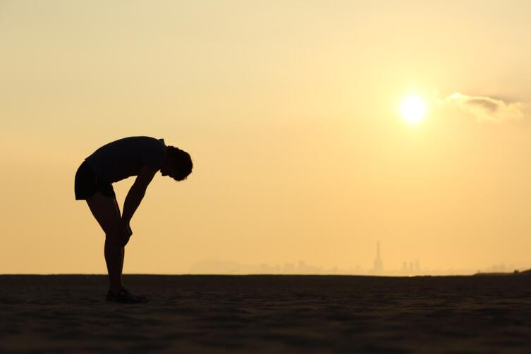

Утренняя пробежка - польза или вред?
Вот и наступила долгожданная весна. Совсем скоро начнет все оживать, солнечные лучи
зальют
землю,
зазеленеют деревья. Осенне-зимняя хандра уступит место хорошему
настроению и желанию активного
образа жизни.
Именно весной многие задумываются об укреплении здоровья и о начале утренних
пробежек.
Однако
иногда регулярные пробежки могут навредить здоровью. Поэтому
попытаемся разобраться, полезны
ли пробежки
по
утрам, проанализируем их
пользу и оценим вред.
В чем положительные стороны утренних пробежек?
Главная положительная сторона физической нагрузки от бега — это комплексная
поддержка
организма,
так как к физической
активности привлекаются все мышцы
человека, и даже те, которые в
обыденной жизни
находятся
в расслабленном
состоянии.
Также доказано, что пробежки для организма дают аэробную нагрузку — таким
образом,
тренируются
мышцы сердца и дыхательная система.
Постоянные умеренные нагрузки повысят тонус организма и физическую
выносливость.
Хорошо известно, что благодаря бегу можно похудеть, ведь он легко сжигает большое
количество
калорий. При этом наибольший эффект достигается именно на утренних
нагрузках. Вы спросите, почему? И ответ
будет достаточно простым: в процессе
активного движения организм берет энергию из углеводов, уровень
которых в
утренний промежуток времени находится на «нуле», поэтому запускается процесс
сжигания жировых накоплений.
Рассматривая положительные стороны от утренних пробежек, следует отметить
следующие факторы:
- Физическая нагрузка способствует поддержке мышц в тонусе, что происходит
благодаря запуску активного обмена веществ в утренний промежуток времени. Таким
образом, улучшается самочувствие, появляется румянец на лице и бодрое
настроение - Ударное количество чистого воздуха «расправляет» легкие и усиливает
кровообращение во всех тканях и органах. Организм насыщается кислородом. - Получив прилив сил и зарядившись бодростью во время бега, человек увеличивает
свою трудоспособность и производительность. - Утренний бег запускает безвозвратные процессы сгорания жировых отложений.
- Регулярные утренние физические нагрузки оказывают положительный
психологический эффект: человек становится защищенным от стрессов и способен
противостоять синдрому хронической усталости.
В чем может проявиться вред от утренних пробежек?
Человеку, имеющему проблемы со здоровьем, прежде чем
приступить к утренним
тренировкам, следует
знать, что при ряде заболеваний запрещены беговые
нагрузки. Это:
- болезни сердца (порок сердца, стенокардия);
- нарушения кровообращения в головном мозге;
- гипертония с проявлением кризов;
- заболевания суставов и позвоночника;
- заболевания вен (тромбофлебит).
Поэтому перед тем, как начать регулярные утренние пробежки, нужно оценить свое
здоровье и
посоветоваться с врачом. И только после положительного заключения
специалиста можно приступать к регулярным
физическим нагрузкам по утрам.